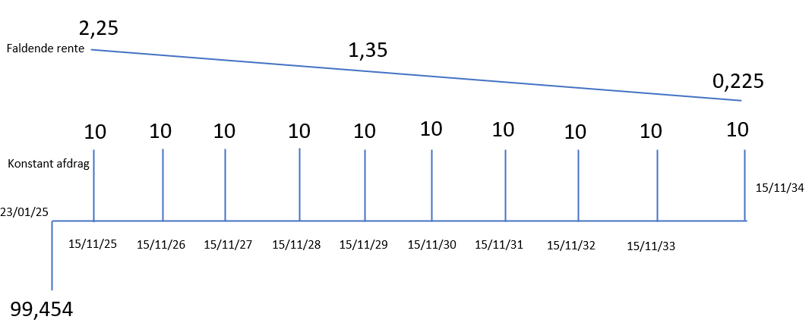

Risikomål for obligationer
Varighed, konveksitet og kurverisiko
Introduktion
Læringsmål
- Forstå pris–yield-relationen og hvorfor den er konveks
- Beregne og anvende Macaulay-varighed, modificeret varighed, kronevarighed/BPV samt kronekonveksitet
- Forstå Fisher–Weil varigheden (spotbaseret) og forskellen til Macaulay
- Skelne parallelle og ikke-parallelle kurvebevægelser og bruge nøglerentevarigheder (delta-vektor)
- Aggregere risikomål på porteføljer (vægtning m. markedsværdi vs. nom. beløb) og anvende dem til immunisering/hedging
Varighed: grundidé
Intuition
- Varighed er et af de vigtigste risikomål indenfor obligationsverdenen
- Den hjælper investorer med at sammenligne risici på tværs af obligationer med forskellige karakteristika så som kupon, løbetider, konverteringsret osv.
- Varigheder kan hjælpe investorer med at styre deres portefølje, ved at matche varigheder for at reducere renterisiko
- Det kan også forbinde afkast og risiko over tid, fordi den afspejler en balance mellem kursrisiko og reinvesteringssrisiko
- Der findees tre former for varigheder: Macaulay-varigheden (Varighed), modificeret varighed og kronevarigheden
Varighed og gennemsnitlig løbetid
- Antag vi har to obligationer med samme løbetid på 10 år:
- Stående lån: Løbende rente, ingen afdrag før til sidst.
- Serie lån: Løbende rente og afdrag.
- Prisen på det stående lån er mere sensitiv overfor renteændringer! Hvorfor?
- Det skyldes at den gennemsnitlige løbetid på den stående obligation er længere end serieobligationen.
- Jo længere løbetid en obligation har, desto flere betalinger vil blive påvirket af renteændringerne.
Varighed og gennemsnitlig løbetid
- Men, vi har lige antaget at de begge har en løbetid på 10 år? Hvordan hænger det så sammen?
- Det skyldes, hvor størrelsen af betalingerne er placeret i obligationernes løbetid.
- Et stående lån har kun løbende rentebetalinger, og hele afdraget i form af hovedstolen til sidst. Største delen af obligationens betaling er dermed sidst i perioden.
- Et serielån har derimod fast afdrag og faldende rentebetalinger, hvilket resulterer i største delen af betalingerne i starten af perioden.
- En renteændring vil alt andet lige påvirke prisen på en stående oblgiation mere end serieobligationen, fordi en større del af af betalingsstrømmen vil blive påvirket.
Varighed og gennemsnitlig løbetid
- Men, vi har lige antaget at de begge har en løbetid på 10 år? Hvordan hænger det så sammen?
- Det skyldes, hvor størrelsen af betalingerne er placeret i obligationernes løbetid.
- Et stående lån har kun løbende rentebetalinger, og hele afdraget i form af hovedstolen til sidst. Største delen af obligationens betaling er dermed sidst i perioden.
- Et serielån har derimod fast afdrag og faldende rentebetalinger, hvilket resulterer i største delen af betalingerne i starten af perioden.
- En renteændring vil alt andet lige påvirke prisen på en stående oblgiation mere end serieobligationen, fordi en større del af af betalingsstrømmen vil blive påvirket.
Varighed og gennemsnitlig løbetid
- 
- Varigheden findes ved at multiplicere tiden til hver betaling med den vægt, som den pågældende betaling udgør af den samlede betalingsstrøm. Herefter sum de vægtede tider.
- Forskellene i cashflows vil under antagelsen af en effektiv rente på 2,45 pct, resultere i en varighed på 4,985 og 8,867 for hhv. serie og den stående obligation.
- Lad os se i Excel!
Immunisering – balance mellem risici
- To risici styrer obligationsafkastet: kursrisiko (kurstab ved rentestigning) og geninvesteringsrisiko (tab ved lavere genplaceringsrente efter rentefald)
- Risiciene trækker i modsat retning: kursfald opvejes af højere geninvesteringsrente – og kursgevinst udlignes af lavere geninvesteringsrente
- Varighedspunktet er balancepunktet, hvor de to effekter udligner hinanden
- Immuniseringshorisonten viser, hvornår en investering er “rentesikker” – man kan låse et minimumsafkast fast på tværs af scenarier
- Praktisk implikation: vælg en obligation, hvor varigheden matcher investeringshorisonten, hvis målet er at minimere renterisiko
Immunisering – balance mellem risici
.png)
Varighed og risikomål
Macaulay varighed
- CF-vægtet gennemsnitlig tid (målt i år) til at modtage obligationens betalinger
- God til at forstå immuniseringshorisonter: balance mellem kurs- og geninvesteringsrisiko
- Mindre praktisk som kurssensitivitetsmål, da den ikke tager direkte højde for renteændringer i pct.-point
- Bruger vi derfor især i teoretisk analyse og til at vurdere, hvornår investeringer er immuniserede
Modificeret varighed
- Afledt af Macaulay-varigheden:
\[ \text{MD} \;=\; \frac{D}{1+r} \] - Angiver den procentvise prisændring, når den effektive rente ændres med 1 procentpoint
- Eksempel (10-årig statsobligation, \(r=2{,}45\%\)):
\[ \frac{8,867}{1+0,0245} = 8,655 \] - ⇒ Pris falder ca. 8,655% ved +1%-point renteændring
- Mere praktisk i risikostyring end Macaulay-varigheden
Kronevarighed
- Oversætter ændringen til kroner i stedet for procent:
\[ d = \frac{D}{1+r}\cdot \frac{\text{Kurs}}{100} = MD \cdot \frac{\text{Kurs}}{100} \] - Eksempel:
\[ \frac{8,867}{1,0245}\cdot\frac{98,694}{100} = 8,542 \; \text{kr.} \] - Fortolkning: Prisændring i kr. ved en renteændring på 1%-point
- Basis Point Value (BPV): prisændring ved 1 bp (0,01%):
\[ \text{BPV} = \frac{\text{Kronevarighed}}{100} \approx 0,008542 \;\text{kr.} \] - Mest anvendte risikomål i praksis (banker, realkredit, porteføljestyring)
Konveksitet
Hvorfor konveksitet?
- Varighedsmål er kun lineære approksimationer af kursfølsomheden
- Man begår fejl, hvis man alene bruger varighed til at forudsige kursændringer ved rentechok
- Se nedenstående eksempel:
| Renteændring | Effektiv rente | Kurs inkl. vedh. rente | Kursændring |
|---|---|---|---|
| +1%-point | 3,45% | 90,572 | -8,122 |
| -1%-point | 1,45% | 107,689 | +8,995 |
- Bemærk, at der ikke er symmetri mellem kursændringer ved rentefald og -stigning
- Denne krumning kaldes konveksitet
- Konveksitet korrigerer varighedstilnærmelsen og giver et mere præcist prisestimat ved større renteændringer
Pris–yield-kurven
- At der ikke er symmetri mellem rente- og kursændringer ses i følgende graf:
- Kurven er stejlere ved lave renteniveauer end ved høje renteniveauer -> Samme ændring i effektiv rente har større effekt ved lave renteniveauer end høje.
- Ikke lineær sammenhæng mellem kurs og rente skyldes, at ved et til strækkeligt lavt renteniveau vil kursen krydse 0 og blive negativ. Det giver dog ingen mening! Derfor må den bøje af på et tidspunkt.
Kronekonveksitet: definition og fortolkning
- Formål: rette varighedens lineære fejl i kroner.
- Fejl ved et renteryk ( y ) (i %-point):
\[ \text{Fejl} \;=\; \tfrac{1}{2}\cdot \text{kronekonveksitet} \cdot (\Delta y)^2 \] - Tegn: altid positiv → konveksitet hjælper ved både fald og stigning (gevinst > tab i absolut).
- Hvor kronekonveksiteten regnes som: \[ \text{Kronekonveksitet} \ (C) = \frac{\sum_{t=1}^{N} (t^2 + t) \cdot c_t \cdot (1 + r)^t}{(1 + r)^2} \cdot 0,01^2 \]
- Intuition: vigtigst for lange løbetider (tidsleddet indgår kvadratisk).
Kronekonveksitet: definition og fortolkning
- Varighed er lineær; konveksitet korrigerer for krumningen
\[ \frac{1}{2} \cdot \text{kronekonveksitet} \cdot (\text{renteændring})^2 \] - Giver bedre prisestimat for specielt større rentebevægelser
.png)
Konveksitet som beskyttelse
- Konveksiteten kan bidrage positivt til investeringsresultatet i form af beskyttelse mod renteudsving.
- Har man tyo obligationer, hvor den ene har høj konveksitet, og den anden lav, vil man alt andet lige være mere villig til at betale mere for den med mere konveksitet.
- En investor der tror obligationsmarkedet vil blive meget volatil (store renteændringer) vil derfor gerne købe meget konveksitet.
Konveksitet eksempel
En obligation har en effektiv rente på 2,00 pct samt en kronevarighed på 4,5 kr og kronekonveksitet på 0,8 kr.
Hvad bliver ændringen i kursen ved et hhv. fald i renten 0,5 procentpoint og stigning 0,5 procentpoint?
Fald:
\[ \Delta P = 0,5 \cdot 4,5 \;+\; \tfrac{1}{2} \cdot 0,8 \cdot (-0,5)^2 = 2,35 \text{ kr.} \]
Stigning: \[ \Delta P \;=\; -0,5 \cdot 4,5 \;+\; \tfrac{1}{2} \cdot 0,8 \cdot (0,5)^2 \;=\; -2,15 \text{ kr.} \]
Rentersiko på porteføljer
To tilgange
- Risiko kan beregnes direkte ved at samle hele cash flow → præcist, men tidskrævende
- Alternativ: brug approksimationer til at finde nøgletal på porteføljeniveau
- Grundregel:
- Nøgletal i kroner (kronevarighed, BPV, kronekonveksitet) → vægt med nom. beløb
- Nøgletal i procenter (varighed, mod. varighed) → vægt med markedsværdier
- Nøgletal i kroner (kronevarighed, BPV, kronekonveksitet) → vægt med nom. beløb
Eksempel: Risikonøgletal på porteføljeniveau
| Nom. beløb | Kurs | Markedsværdi (M) | Macaulay varighed | Mod. varighed | Kronevarighed | Kronekonveksitet | |
|---|---|---|---|---|---|---|---|
| Obligation 1 | 10.000.000 | 99,3 | 9.930.000 | 2,20 | 2,18 | 2,16 | 0,14 |
| Obligation 2 | 15.000.000 | 101,5 | 15.225.000 | 4,80 | 4,73 | 4,80 | 0,34 |
| Obligation 3 | 25.000.000 | 102,8 | 25.700.000 | 10,50 | 10,30 | 10,59 | 1,20 |
| Portefølje | 50.000.000 | – | 50.855.000 | 7,17 | 7,05 | 7,17 | 0,73 |
Beregning af varighed (vægtet m. markedsværdi)
Porteføljevarighed findes som markedsværdivægtet gennemsnit:
\[ D_P = \frac{9{,}93M \cdot 2,20 + 15{,}225M \cdot 4,80 + 25{,}625M \cdot 10,50}{9{,}93M+15{,}225M+25{,}625M} = 7,17 \]Modificeret varighed vægtes tilsvarende:
\[ MD_P = \frac{9{,}93M \cdot 2,18 + 15{,}225M \cdot 4,73 + 25{,}625M \cdot 10,14}{50{,}780M} = 7,05 \]Eller:
\[ MD = \frac{D}{1+r} = \frac{7,17}{1+0,0177} = 7,05 \]
Kronevarighed
Vægtes med nom. beløb:
\[ d = \frac{10M \cdot 2,16 + 15M \cdot 4,80 + 25M \cdot 10,59}{50M} = 7,17 \]Fortolkning:
- Ved en ændring på +1 %-point → tab 7,17 kr. pr. 100 nom.
- Ved en ændring på −1 %-point → gevinst 7,17 kr. pr. 100 nom.
- Ved en ændring på +1 %-point → tab 7,17 kr. pr. 100 nom.
Samlet for porteføljen:
\[ d_{tot} = \frac{7,17 \cdot 50M}{100} = 3,59 \,\text{mio. kr.} \]
Kronekonveksitet
Vægtes med nom. beløb:
\[ C = \frac{10M \cdot 0,14 + 15M \cdot 0,34 + 25M \cdot 1,20}{50M} = 0,73 \,\text{kr.} \]Fortolkning:
- Konveksiteten giver en ekstra prisjustering udover varigheden.
- Bruges som korrektion:
\[ \Delta P_{conv} = \tfrac{1}{2} \cdot C \cdot (\Delta y)^2 \]
- Konveksiteten giver en ekstra prisjustering udover varigheden.
Fx ved ±1 %-point:
\[ \tfrac{1}{2}\cdot 0,73 = 0,37 \,\text{kr.} \]
→ porteføljen justeres yderligere for at få et mere præcist billede af risikoen.
Risikomål og rentestrukturen
Hvorfor bruge rentestrukturen?
- De hidtil varighed- og konveksitetsmål har været udregnet under antagelsen af én enkelt effektiv rente, som var rentekurven helt flad.
- Dette giver inkonsistente risikomålinger! Kuponbetalingen der falder om 1 og 30 år diskonteres med den samme rente. Urealistisk.
- Løsningen er derfor at anvende nulkuponrentestrukturen, hver kuponbetalingen diskonteres med den pågældende kuponrente.
- Hermed får man inddraget markedsforventningerne til renterne ind i sine risikonøgletal.
- Varighed udregnet med nulkuponrentestrukturen kaldes for Fisher-Weil varigheden.
Macaulay vs. Fisher–Weil (3-årig obligation)
| Tid | CF | Nulkuponrente | Eff. rente (Mac.) | Nulkupon (F–W) | Vægt (Mac.) | Vægt (F–W) | Vægt·Tid (Mac.) | Vægt·Tid (F–W) |
|---|---|---|---|---|---|---|---|---|
| 1 | 2,25 | 1,25 % | 2,19 | 2,22 | 2,22 % | 2,32 % | 0,0222 | 0,0232 |
| 2 | 2,25 | 2,50 % | 2,13 | 2,14 | 2,16 % | 2,23 % | 0,0432 | 0,0447 |
| 3 | 102,25 | 3,75 % | 94,18 | 91,56 | 95,62 % | 95,45 % | 2,8685 | 2,8635 |
| Kurs | 98,50 | 95,92 | 2,9339 | 2,9313 |
Risikomål og nøglerentevarighed
Hvorfor bruge nøglerentevarigheder?
- Ulempen ved at bruge Fisher Weil varighedsmålet er, at den måler risikoen ved paralelle skift i rentekurven.
- Her bevæger alle renter på tværs af rentekurven sig lige meget (eksempelvis 1 procentpoint op eller ned)
- Problematisk fordi:
- En investor sælger korte obligationer, der blot har en varighed på 2 år for 50 mio kr.
- Investoren køber i stedet lange obligationer for 10 mio. kr med en varighed på 10 mio kr.
- Investoren tænker, at han har den samme varighed i hans portefølje. Dermed uændret risiko.
Hvorfor bruge nøglerentevarigheder?
- Risikoen er langt fra uændret! Porteføljens risiko er kun uændret, hvis alle renter langs rentestrukturen bevæger sig ens.
- Investorens portefølje er nu i stedet langt mere eksponeret overfor lange renter. Dermed er hun eksponeret overfor andre makroøkonomiske faktorer.
- Der er behov for et mere nuanceret risikomål som tager højde for ikke-parallelle renteforskydninger -… Vi har brug for nøglerentevarigheder! (delta vektorer)
Hvorfor bruge nøglerentevarigheder?
- Metode: Ryg og regn! Udregn nutidsværdien for obligationen ved hvert lokalt rentestød og herefter bestem den specifikke varighed for hvert punkt.
Kronevarighed fordelt på nøglerenter
| Kronevarighed | 1-årig rente | 3-årig rente | 5-årig rente | 10-årig rente | |
|---|---|---|---|---|---|
| Eksempel | 5 kr. | 0,5 kr. | 1,5 kr. | 2 kr. | 1 kr. |
Eksempel på vigtigheden af nøglerenter
| Tid (år) | Nulkupon | Chok 1 | Chok 2 | CF | NV CF | NV Chok 1 | NV Chok 2 |
|---|---|---|---|---|---|---|---|
| 1 | 1,0 % | 2,0 % | 1,0 % | 3,00 | 2,97 | 2,94 | 2,97 |
| 2 | 2,0 % | 2,5 % | 2,5 % | 3,00 | 2,88 | 2,86 | 2,86 |
| 3 | 3,0 % | 3,0 % | 4,0 % | 103,00 | 94,26 | 94,26 | 91,57 |
| Nutidsværdi | 100,11 | 100,06 | 97,39 | ||||
| Følsomhed (Nøglerentevarighed) | -0,06 | -2,72 |
Øvelser
Excel
- Stående obligation med 2 pct kupon som løber over 3 år
- Nøglerenter: (1Y, 3Y)
- Nulkuponrentekurve (3,00; 3,50; 4,00) for år 1, 2 og 3.
- Chok 1: 1Y nøglerenten stiger med 1 procent point
- Chok 2: 3Y nøglerenten stiger med 1 proocent point
| Tid (år) | Nulkuponrente i dag | Nulkuponrente chok 1 | Nulkuponrente chok 2 |
|---|---|---|---|
| 1 | 3,00 % | 4,00 % | 3,00 % |
| 2 | 3,50 % | 4,00 % | 4,00 % |
| 3 | 4,00 % | 4,00 % | 5,00 % |
- Hvad er nøglerentevarighederne for år 1 og 3?
- Hvad er kronevarigheden?
- Hvad er fisher weil varigheden?
Opsummering
Takeaways
- Varighed måler førsteordens prisfølsomhed:
- Macaulay-varighed = PV-vægtet gennemsnitlig tid (god til immuniseringshorisonter)
- Modificeret varighed = procentvis prisændring pr. 1 %-point ændring i den effektive rente
- Kronevarighed / BPV = prisændring i kr. ved en ændring på 1 %-point / 1 bp
- Macaulay-varighed = PV-vægtet gennemsnitlig tid (god til immuniseringshorisonter)
- Konveksitet korrigerer varighedens lineære fejl:
\[ \Delta P \;\approx\; -\,\text{Dur}\cdot \Delta y \;+\; \tfrac{1}{2}\cdot \text{Conv}\cdot (\Delta y)^2 \]
→ vigtig især ved større renteændringer og lange løbetider
- Fisher–Weil varighed anvender nulkuponrenter og måler følsomheden ved parallelle forskydninger af hele rentekurven – giver kurvekonsistente risikomål
- Nøglerentevarigheder (delta-vektorer) fanger lokale kurvebevægelser (ikke-parallelle skift) og bruges til hedging og scenarie-P/L
- På porteføljeniveau:
- Nøgletal i % (varighed, mod. varighed) vægtes med markedsværdi
- Nøgletal i kr. (kronevarighed, BPV, kronekonveksitet) vægtes med nominal
→ giver konsistente og additive risikomål til styring og rapportering
- Nøgletal i % (varighed, mod. varighed) vægtes med markedsværdi
Finansiering — Risikomål